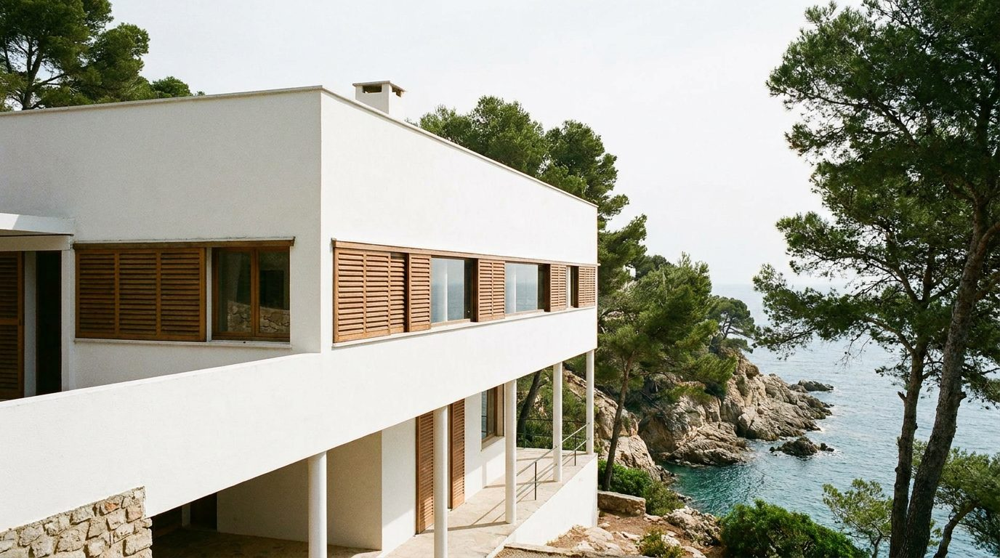
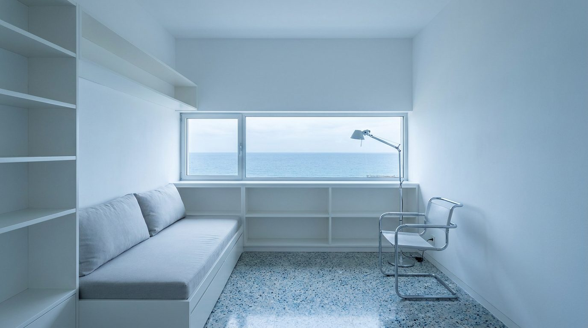

Atlante · FR-09 · Francia · Provincia
Villa modernista anni '30
Esempi · esterno e interno


Perché funziona
lusso "colto", perfetto per arredi di design storico; geometrie semplici e colori primari controllati rendono la generazione stabile.
Architettura · elementi riproducibili
- Finestre a nastro, angoli vetrati, terrazze con parapetto pieno
- Pareti bianche opache, infissi in ferro sottile; HSP 3,0–3,5 m
- Arredi integrati: mensole, armadi a muro, lettini in tubolare
- Pavimenti in gomma, pietra chiara, piastrelle; caminetto a blocco
Luce
mediterranea dura, sole alto, ombre nette e geometriche; 5500–6000 K; superfici bianche che rimbalzano luce negli ambienti.
Prompt di generazione (EN)
1930s modernist villa interior on the French Riviera, white matte walls, ribbon window with thin steel frame, polished grey stone floor, built-in white shelving, tubular chrome lounge chair, terracotta vase, low platform bed. Hard Mediterranean sunlight through the ribbon window casting sharp geometric shadows, 5800 K, bright bounce on the white walls. 28 mm lens, f/8, camera at 1.4 m, horizontal composition aligned to the window line, no people, 3:2.
Errori tipici da controllare"modernariato" confuso con minimalismo scandinavo; infissi spessi; sole diffuso invece di ombre nette.